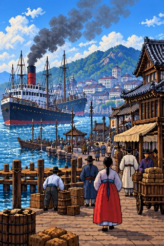

본문으로 건너뛰기
史
사극의 뒤편
드라마 배경 확인
시대별 작품 추천
탐색 시작
↘
메뉴
☰
드라마 배경 확인
시대별 작품 추천
史
사극의 뒤편
드라마에서 역사를 만나다
01
드라마 배경 확인
↗
02
시대별 작품 찾기
↗
1397 — 1450 · 조선
세종대왕
1545 — 1598 · 조선
이순신
1762 — 1836 · 조선
정약용
1852 — 1919 · 대한제국
고종
1902 — 1920 · 일제강점기
유관순
1752 — 1800 · 조선
정조
1694 — 1776 · 조선
영조
1745 — 1806 · 조선
김홍도
1851 — 1894 · 개화기
김옥균
1879 — 1910 · 대한제국
안중근
1876 — 1949 · 독립운동
김구
01
/
11
초상 출처 · 위키미디어 공용 ↗
↓
드라마에서 역사 찾기
작품 포스터를 불러오는 중…
시대별 작품 찾기
삼국 시대
고구려 · 백제 · 신라
기원전 1세기–668년
세 나라의 성장과 경쟁
세 나라의 경쟁과 동맹, 신라의 통일.
이 시대 작품 찾기 ↗
고려 시대
고려 · 918—1392
918–1392년
통일 왕조와 열린 교류
불교 문화와 주변 국가와의 교류.
이 시대 작품 찾기 ↗
조선 시대
조선 · 1392—1897
1392–1897년
기록으로 읽는 왕조의 시간
훈민정음 창제와 영조·정조의 개혁.
이 시대 작품 찾기 ↗

개항기
개항기 · 1876—1910
1876–1910년
새로운 질서와 선택
개항과 근대화, 외세의 압력.
이 시대 작품 찾기 ↗
대한제국
대한제국 · 1897—1910
1897–1910년
독립을 지키려 한 시대
국권 수호와 의병 활동.
이 시대 작품 찾기 ↗
기록의 장을 여는 중
기록의 울림 · 史